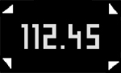

| 3/6 | Falls Sie sich nicht richtig auf die Waage gestellt haben, erscheinen auf der Anzeige kleine Pfeile.  Korrigieren Sie Ihre Position auf der Waage, indem Sie den Pfeilen folgen, damit die Sensoren Sie präzise erfassen können. Die Pfeile verschwinden, sobald Sie richtig stehen. Dann ist die Messung beendet.
|